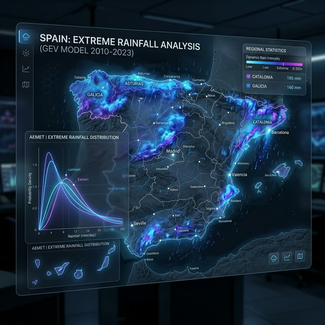

For decades, the standard approach to flood risk management relied on a single, core assumption: stationarity. The idea was simple—the past is a reliable guide to the future. If we know the biggest storm of the last 50 years, we can design infrastructure for the next 50.
However, in a world shaped by climate variability, this assumption is no longer valid. In my recent research published in the Hydrological Sciences Journal, we explored how non-stationary techniques are becoming essential for predicting extreme monthly rainfall in Spain.
Want the full scientific breakdown?
Access the original research paper on Taylor & Francis for the complete methodology and results.
Read the Full Paper
Why Stationary Models are Failing
Traditional extreme value analysis (like the GEV distribution) often assumes that yearly maxima are independent and identically distributed. But when we look at sub-yearly data—like monthly rainfall—the maxima from different months are not interchangeable. Seasonality, global climate patterns (like ENSO), and long-term trends all play a role.
The Autoregressive Revolution
Our study compared two distinct approaches: a direct parametric method and an approach based on autoregressive time series models. The results were clear: autoregressive models provided a significantly more accurate representation of extreme events. By accounting for dependencies and temporal variations, these models showed a much lower Akaike Information Criterion (AIC), meaning they offer a better fit with lower complexity.
Impact for Flood Risk Policy
This isn't just a mathematical exercise. Improved predictive capability means we can better assess the probability of future extreme events. For a country like Spain, where hydrological risks vary significantly by region and month, using non-stationary tools isn't just better science—it's a necessity for resilient urban planning and civil engineering.
The predictive probability of extreme events is shifting. Our research provides a comprehensive framework to characterize these changes, ensuring that we design for the climate of tomorrow, not the climate of yesterday.
Cite this research
Urrea Méndez, D., & del Jesus, M. (2023). Estimating extreme monthly rainfall for Spain using non-stationary techniques. Hydrological Sciences Journal.
View on Taylor & Francis